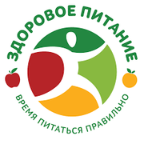
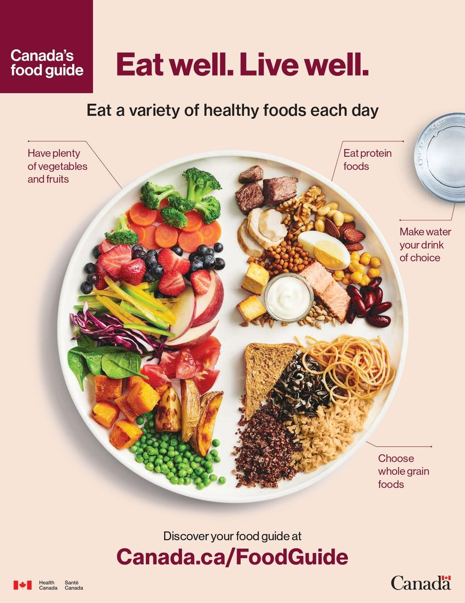

 Питание — процесс усвоения организмом питательных веществ, необходимых для поддержания жизни, здоровья и работоспособности. При здоровом питании человек меньше подвергается различным заболеваниям и легче с ними справляется. Здоровое питание — это сбалансированный рацион, составленный с учетом пола, возраста, состояния здоровья, образа жизни, характера труда и профессиональной деятельности человека, климатических условий его проживания. Здоровое питание имеет профилактическое значение для предупреждения преждевременного старения. При желудочно-кишечных, сердечно-сосудистых и других заболеваниях специально составленный рацион и режим питания являются одним из лечебных назначений.
Необходимо придерживаться принципов здорового питания.
Энергетический баланс — соответствие поступающей с пищей энергии количеству затрачиваемой организмом энергии в процессе жизнедеятельности. Основным источником энергии для организма является потребляемая пища. Организм расходует энергию на поддержание температуры тела, функционирование внутренних органов, течение обменных процессов, мышечную деятельность Энергетическая ценность пищевого рациона питания должна соответствовать энерготратам организма.
| Вид деятельности | Энерготраты (ккал/час) |
|---|---|
| Сон | 50 |
| Отдых лежа (без сна) | 65 |
| Чтение вслух | 90 |
| Сидячая работа | 110 |
| Работа стоя | 160-170 |
| Работа в саду | 130-190 |
| Домашние дела (уборка, готовка, стирка) | 100-240 |
| Спокойная ходьба | 130 |
| Быстрая ходьба | 215-300 |
| Бег трусцой | 360 |
| Бег вверх и вниз по ступеням | 540 |
| Ходьба на лыжах | 485 |
| Плавание | 180-400 |
| Езда на велосипеде | 210-540 |
Согласно основам рационального питания оптимальным соотношением белков, жиров и углеводов является 1:1:4 для взрослого населения при низкой интенсивности труда и 1:1:5 при высокой интенсивности труда. Энергетическая ценность рациона взрослого человека, проживающего в умеренном климате и не вовлеченного в тяжелый труд, должна распределяться в последовательности 10%-15% белковой пищи, 15%-30% жиросодержащих продуктов, а также 55%-75% углеводов.
Необходимо свести употребление соли до 5 и менее грамм в сутки, включая скрытую соль в хлебе, мясных и колбасных изделиях, соусах и консервах. Возьмите в привычку недосаливать пищу в тарелке, добавляйте меньше соли при приготовлении пищи, заменяйте соль на ароматные травы и специи.
Ешьте питательную пищу, в основе которой лежат разнообразные продукты главным образом растительного, а не животного происхождения. Пища должна быть разнообразной, поскольку ни один продукт в отдельности не может обеспечить организм всем необходимым. Именно поэтому вредны, и даже опасны, популярные современные монодиеты, основанные на преобладании 1-2 видов продуктов. Снижение веса при соблюдении таких диет сопровождается нанесением вреда здоровью организма, их эффект краткосрочен и потерянные килограммы вернутся быстро и даже в большем объёме.
Важно использование цельнозерновых продуктов, повышенное потребление овощей и фруктов, ограничение в рационе простых углеводов (сахаров).
Потребление алкоголя свести к минимумуДля примера рассмотрим канадский гид по питанию. В отличие от других подобных руководств, он не содержит норм потребления продуктов и строгого меню
